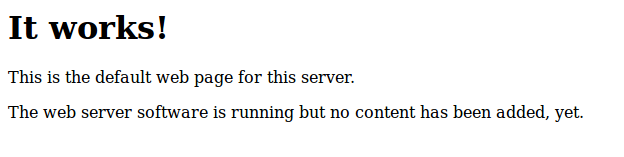
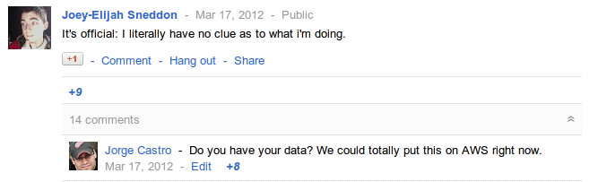
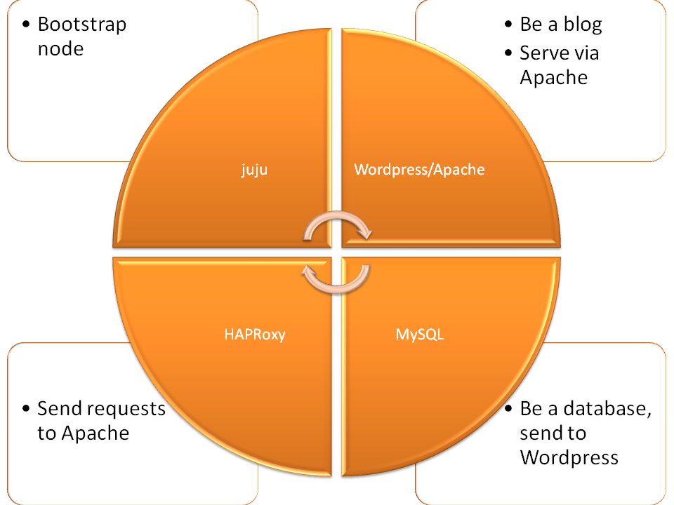
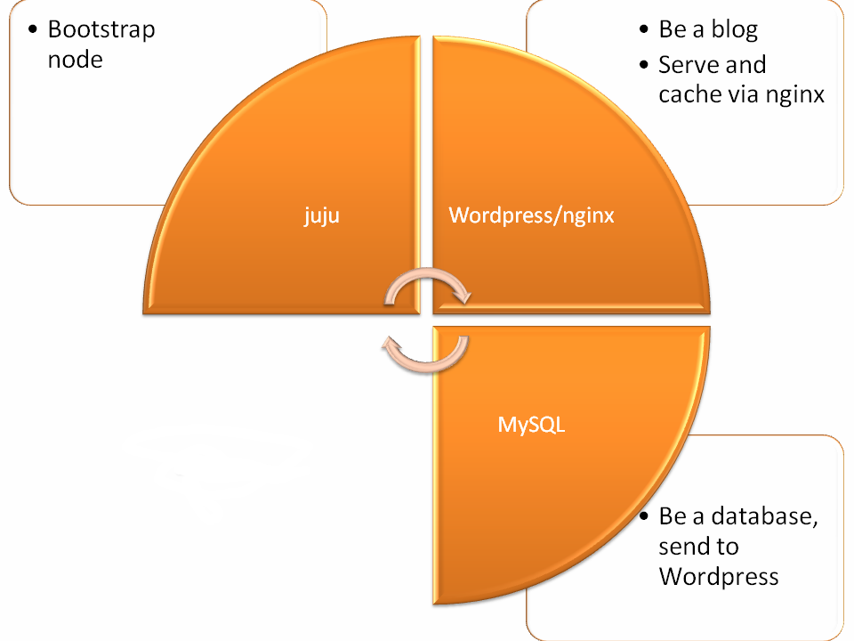
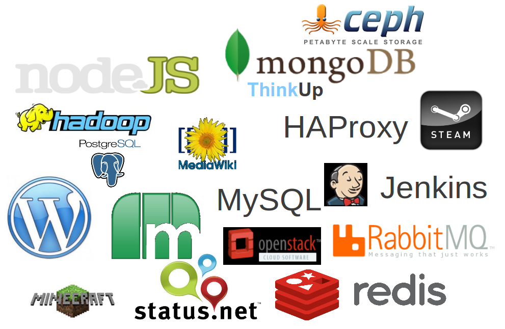

Who am I?

Jorge O. Castro <jorge@ubuntu.com>
juju manages services, NOT machines
How about this instead?
juju deploy hadoop hadoop-master
juju deploy hadoop hadoop-slavecluster
juju manages services, NOT machines
Relating the Services
juju add-relation hadoop-master:namenode hadoop-slavecluster:datanode
juju add-relation hadoop-master:jobtracker hadoop-slavecluster:tasktracker
Scale Out!
juju add-unit -n20 hadoop hadoop-slavecluster
DevOps Lego blocks! Mix and Match!
juju set phpmyadmin use-upstream=true
juju deploy mod-spdy
juju add-relation mod-spdy phpmyadmin
Let's move something to the cloud!
I just need something to fix


What we did....
juju bootstrap
juju deploy haproxy
juju deploy mysql
juju deploy wordpress
juju add-relation mysql wordpress
juju add-relation wordpress haproxy
juju expose haproxy

I messed up...
$3,500 a month
This doesn't scale!
Wordpress charm was too basic, needed 4 x xlarges!
Untested in real life.
I need a real expert!
Found someone to help, let's iterate ...
juju upgrade-charm wordpress-omg

Not so bad...
$372 a month
Now we're tuning, let's iterate ...
juju upgrade-charm wordpress-omg
Not so bad...
$172 a month
Let's scale up and down
juju add-unit wordpress-omg
juju remove-unit wordpress-omg
juju upgrade-charm wordpress-omg
This is why we call it DevOps Distilled
Every Ubuntu user can now deploy WordPress like this
This is the beginning
The Charm Store doesn't freeze.
juju comes with Ubuntu.
We are just starting...

Does your project run on the cloud? Come talk to us!
Thanks!
juju.ubuntu.com
cloud.ubuntu.com
launchpad.net/juju
#juju on Freenode
Jorge O. Castro <jorge@ubuntu.com>